<title>Energetics, four ways</title>
<meta name="viewport" content="width=device-width,initial-scale=1,viewport-fit=cover">
<!-- Round DM. Four Energetics layouts, laid over the committed build, walked
     by the six reference ICPs with real keystrokes. Every picture is a capture
     of proto/energetics/energetics.html taken by shoot.js; every measured
     number is read off shots/facts.json. The reactions are simulated. -->
<style>
:root{color-scheme:dark;
 --bg:#0C0D12;--panel:#171A22;--panel-2:#20242E;--edge:rgba(255,255,255,.08);--edge-2:rgba(255,255,255,.15);
 --ink:#EFEDE8;--mid:#B8B4AC;--dim:#8F8B85;--accent:#7EB8D4;--gold:#DFCC7E;--root:#D6524C;
 --buy:#5FD5A6;--hold:#7EB8D4;--confuse:#C9A6F0;--resist:#E7A35A;--refuse:#E0625C;--r:14px;--r-s:10px}
@media (prefers-color-scheme:light){:root:not([data-theme="dark"]){color-scheme:light;
 --bg:#E9E8E3;--panel:#FFFFFF;--panel-2:#F3F3F1;--edge:rgba(20,22,28,.10);--edge-2:rgba(20,22,28,.20);
 --ink:#15171D;--mid:#45433E;--dim:#6B6862;--accent:#2F6E92;--gold:#8A7520;--root:#B23A34;
 --buy:#1E8A62;--hold:#2F6E92;--confuse:#7446B0;--resist:#A45F12;--refuse:#B23A34}}
:root[data-theme="light"]{color-scheme:light;
 --bg:#E9E8E3;--panel:#FFFFFF;--panel-2:#F3F3F1;--edge:rgba(20,22,28,.10);--edge-2:rgba(20,22,28,.20);
 --ink:#15171D;--mid:#45433E;--dim:#6B6862;--accent:#2F6E92;--gold:#8A7520;--root:#B23A34;
 --buy:#1E8A62;--hold:#2F6E92;--confuse:#7446B0;--resist:#A45F12;--refuse:#B23A34}
:root[data-theme="dark"]{color-scheme:dark}
*{box-sizing:border-box}
body{margin:0;background:var(--bg);color:var(--ink);font:16px/1.58 Inter,system-ui,-apple-system,"Segoe UI",Roboto,sans-serif}
main{max-width:1180px;margin:0 auto;padding-inline:16px;padding-block:40px 96px}
h1{font-size:34px;line-height:1.15;margin:0 0 10px;font-weight:650;text-wrap:balance}
h2{font-size:23px;line-height:1.25;margin:64px 0 12px;font-weight:620;text-wrap:balance}
h3{font-size:17px;margin:22px 0 6px;font-weight:600;text-wrap:balance}
p,li{max-width:70ch;color:var(--mid)}
p b,li b,td b{color:var(--ink);font-weight:600}
.lede{font-size:18px;color:var(--ink);max-width:66ch}
a{color:var(--accent)}
a:focus-visible,button:focus-visible{outline:2px solid var(--accent);outline-offset:2px}
code{font-size:.9em}
.num{font-variant-numeric:tabular-nums;white-space:nowrap}
.box{background:var(--panel);border:1px solid var(--edge);border-radius:var(--r);padding:18px 20px;margin:16px 0}
.box.warn{border-color:var(--gold)}
.box h3{margin-top:0}
.two{display:grid;grid-template-columns:1fr 1fr;gap:18px}
.two ul{margin:6px 0 0;padding-left:20px}
.shots{display:grid;grid-template-columns:1fr 1fr 190px;gap:10px;margin:16px 0}
.shots.four{grid-template-columns:repeat(4,1fr)}
.shots.phone{grid-template-columns:repeat(4,minmax(0,1fr))}
figure{margin:0;background:var(--panel);border:1px solid var(--edge);border-radius:var(--r-s);padding:8px}
figure a{display:block}
figure img{width:100%;height:auto;display:block;border-radius:6px;background:#000}
figcaption{font-size:13px;color:var(--dim);margin:6px 2px 0;line-height:1.4}
figcaption b{color:var(--ink);font-weight:600}
.v{margin-top:56px;padding-top:22px;border-top:1px solid var(--edge-2)}
.vh{display:flex;flex-wrap:wrap;align-items:baseline;gap:6px 14px}
.vh h2{margin:0}
.vk{color:var(--dim);font-size:15px}
.wrap{overflow-x:auto}
table{border-collapse:collapse;width:100%;font-size:15px;margin:10px 0}
th,td{text-align:left;vertical-align:top;padding:9px 10px;border-top:1px solid var(--edge)}
th{color:var(--dim);font-weight:500;font-size:13px}
td{color:var(--mid)}
td.best{color:var(--ink);font-weight:600}
.tag{display:inline-block;font-size:12px;font-weight:600;letter-spacing:.04em;padding:1px 8px;border-radius:20px;border:1px solid currentColor;white-space:nowrap}
.t-buy{color:var(--buy)}.t-hold{color:var(--hold)}.t-confuse{color:var(--confuse)}.t-resist{color:var(--resist)}.t-refuse{color:var(--refuse)}
.voice{color:var(--ink);margin:4px 0 2px;font-size:14.5px}
.voice::before{content:"\201C"}.voice::after{content:"\201D"}
.rests{font-size:13px;color:var(--dim);margin:2px 0 0}
.grid6 td{min-width:170px}
.q{background:var(--panel);border:1px solid var(--edge);border-radius:var(--r);padding:16px 18px;margin:14px 0}
.q h3{margin:0 0 6px}
.q p{margin:6px 0}
.q ul{margin:6px 0;padding-left:20px}
.finding{border-left:3px solid var(--root);padding:4px 0 4px 18px;margin:18px 0}
.finding p{margin:8px 0}
@media (max-width:900px){.shots,.shots.four{grid-template-columns:1fr 1fr}.two{grid-template-columns:1fr}.shots.phone{grid-template-columns:1fr 1fr}}
@media (max-width:520px){h1{font-size:28px}.shots,.shots.four{grid-template-columns:1fr}}
@media (prefers-reduced-motion:reduce){*{scroll-behavior:auto}}
</style>

<main>
<h1>Energetics, four ways</h1>
<p class="lede">He asked for Energetics to read a person as they fill it in: the root of each name, Myers Briggs as a pattern of movement, the masculine and feminine slider as two channels of one vehicle, a left rail that lights as questions are answered, one page that sums it all up, and Source AI on the right. Four layouts were built over the real build and walked by the six reference ICPs, typing their own names and birth details, at a desk and on a phone.</p>

<div class="box warn">
<h3>What is real, what is illustrative, what is simulated</h3>
<div class="two">
<div><b>Real, read live off the engine</b>
<ul>
<li>All six numerology numbers, off the names as typed (<code>numerology()</code>), with the product's own drill behind each.</li>
<li>Sun, moon, rising and year, through the celestial rail already built in <code>proto/states</code>, reused rather than copied.</li>
<li>The four letters of a stated type, read through the product's own seed definitions in <code>engine/seed.js</code>.</li>
<li>The two channels, off the product's own <code>balance()</code>.</li>
<li>The archetype pick (the product's twelve) and nine child emotion questions lifted word for word from the web quiz, scored the way the quiz scores them.</li>
</ul></div>
<div><b>Not real, and marked on the page</b>
<ul>
<li><b>Name roots.</b> Nine names only: his three and the six ICP first names, checked against published references. No ICP middle or last name is on file, on purpose, so the walk meets the empty state a real table would.</li>
<li><b>Source AI.</b> Scripted sentences assembled from the readings. No model is called, and the panel says so on its face.</li>
<li><b>The reactions below.</b> Written by one model reading six persona records. Nobody said any of it. The numbers under each are measured.</li>
<li><b>Myers Briggs for five ICPs.</b> None has a type on file, so the walk states one each (assumed) and James leaves it blank.</li>
</ul></div>
</div>
</div>

<h2>Where it starts</h2>
<p>Today's Energetics, blank and with James loaded. The left rail shows the same Root and Blueprint tiles on every tab, with "washed, your selection sits here" under them whatever has been entered. James's names show as empty fields because a reference case keeps its full name elsewhere.</p>
<div class="shots four">
<figure><a href="shots/before-blank-1600.png">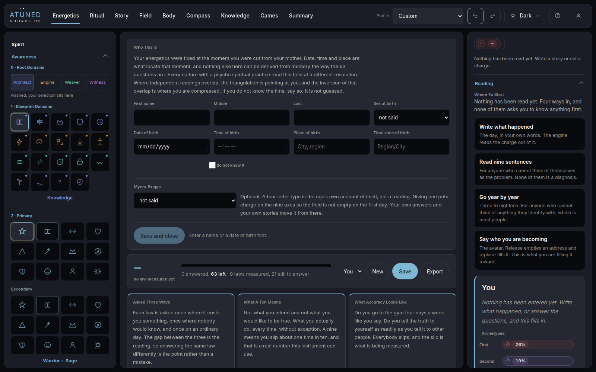</a><figcaption><b>Shipped, blank.</b> 1600 wide.</figcaption></figure>
<figure><a href="shots/before-james-1600.png">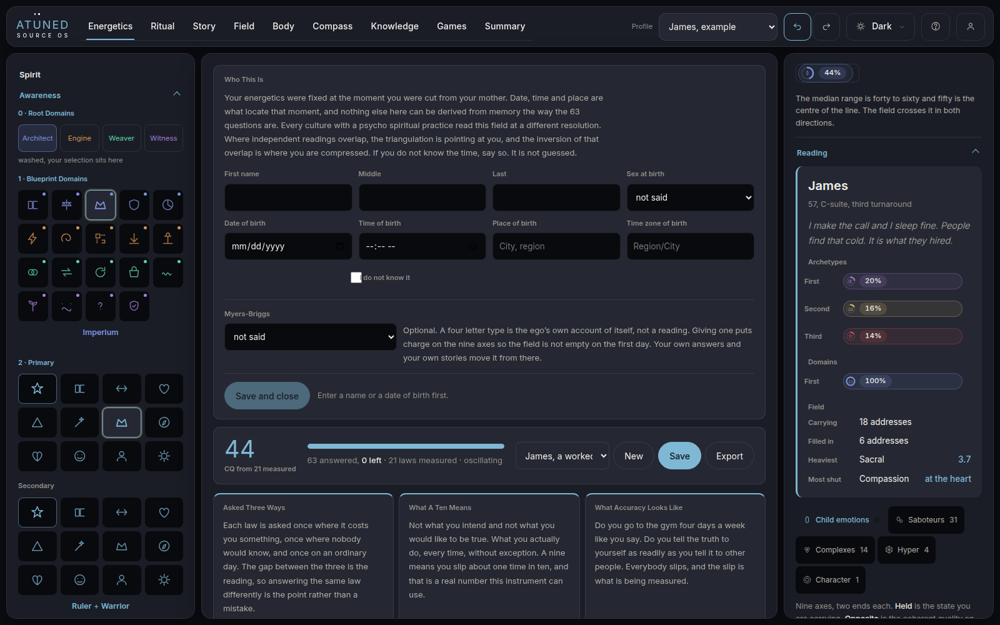</a><figcaption><b>Shipped, James.</b> The rail does not change.</figcaption></figure>
<figure><a href="shots/before-blank-390.png">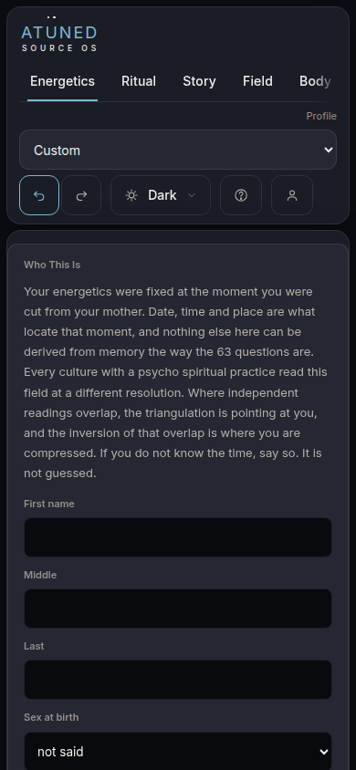</a><figcaption><b>Shipped, phone.</b> A paragraph of nine lines before the first field.</figcaption></figure>
</div>

<h2>What was looked at first</h2>
<p>A short survey of products that build a picture of a person from what they enter. What was taken, and from where.</p>
<div class="wrap"><table>
<tr><th>Product</th><th>What it does at the start</th><th>What was taken</th></tr>
<tr><td><b>Co-Star</b></td><td>One question per screen: name, date, time, place, with a "time unknown" option and a line on why time matters. Placements readable within minutes.</td><td>The one-question card and the honest time unknown option, in Staged. The house already refuses to guess a time.</td></tr>
<tr><td><b>The Pattern</b></td><td>Birth data in, then a short headline per trait on a card, tap for more, then long form. No astrology terms on the surface.</td><td>Three depths per reading: the tile, the line, the card. Used in Tiles and Portrait.</td></tr>
<tr><td><b>16Personalities</b></td><td>A long questionnaire, then a type with each axis drawn as a split.</td><td>Reading each letter as its own axis rather than sixteen fixed descriptions. The engine's seed already works this way.</td></tr>
<tr><td><b>Human Design apps</b> (myBodyGraph, Bodygraph)</td><td>Birth details in, a bodygraph drawn at once.</td><td>The drawing arrives as soon as the data does. Every layout reads within a second of a field changing.</td></tr>
<tr><td><b>Noom</b></td><td>About ninety screens. Between question groups it shows a screen that feeds back what was just learned.</td><td>The "just opened" card in Staged: every answer pays something back before the next question. Not taken: its fake analysing screens, which pretend to compute.</td></tr>
<tr><td><b>Oura</b></td><td>Some readings stay shut until enough nights are in, and say so.</td><td>Named locks. A group that is not read yet says which answer opens it, and never shows an invented value.</td></tr>
<tr><td><b>Duolingo</b></td><td>Value before sign up, one tap per step, visible progress.</td><td>One tap per child emotion question in Staged. Not taken: streak pressure, which the house rules out.</td></tr>
</table></div>
<p class="rests">Sources read through search on 26 September: an IxD@Pratt critique of Co-Star, a screensdesign showcase and Bustle review of The Pattern, 16Personalities' own articles, Bodygraph's pages, RevenueCat's and Retention.blog's teardowns of Noom, Oura's readiness pages. Direct page fetches were blocked in this sandbox, so each line above rests on those summaries.</p>

<h2>The four</h2>

<section class="v" id="a">
<div class="vh"><h2>Quiet</h2><span class="vk">minimal, collapsed. No left rail at all.</span></div>
<p>One column of fields. The line under each field reads what it carries as it is typed: the root and the number under a name, life path, sun and year under the date. Channels are a two bar strip. The archetype, the nine questions, the essence page and the 63 law questions each sit behind one row. Source AI on the right.</p>
<div class="shots">
<figure><a href="shots/a-james-done-1600.jpg">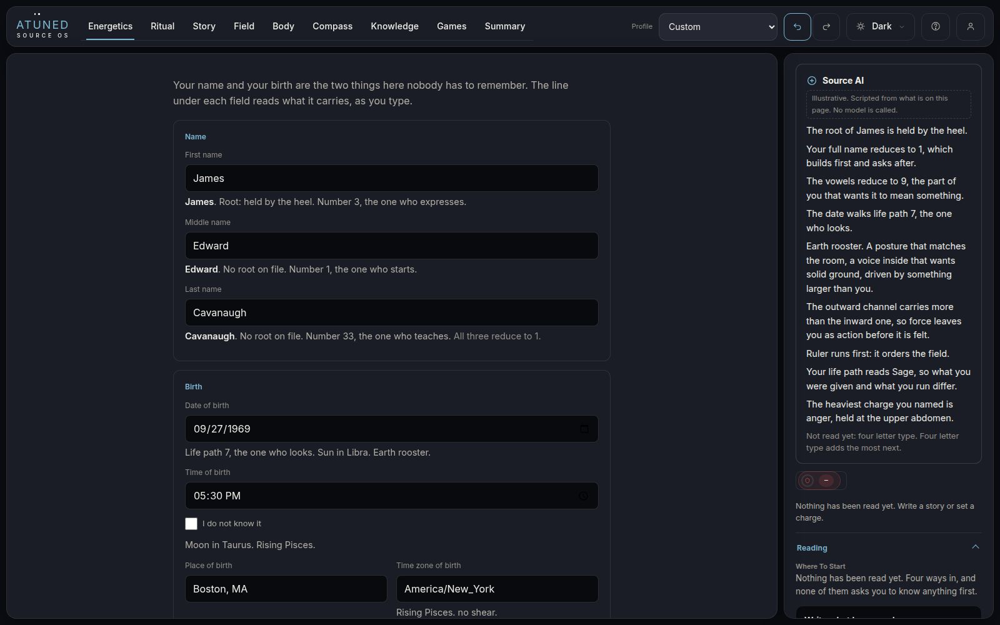</a><figcaption><b>James, finished.</b> Readings live under their own fields.</figcaption></figure>
<figure><a href="shots/a-james-essence-1600.jpg">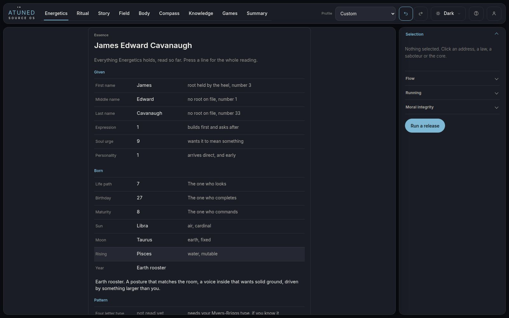</a><figcaption><b>The essence page</b>, one row down.</figcaption></figure>
<figure><a href="shots/a-james-first-390.jpg">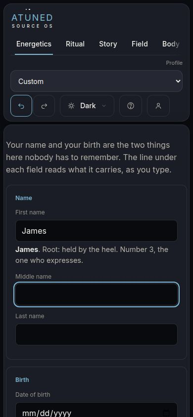</a><figcaption><b>Phone, first name typed.</b> The reading lands 5 pixels under the field.</figcaption></figure>
</div>
</section>

<section class="v" id="b">
<div class="vh"><h2>Tiles</h2><span class="vk">icon heavy. The rail lights as fields fill.</span></div>
<p>The left rail becomes seven groups of rail tiles: name, numbers, sky, pattern, channels, archetype and what you carry. Each starts dashed, reading "not read yet", and pulses once when its field fills. Every tile opens its card on the right. The form, the archetype grid and the nine questions sit in the centre. Closest to his words about the rail.</p>
<div class="shots">
<figure><a href="shots/b-james-done-1600.jpg">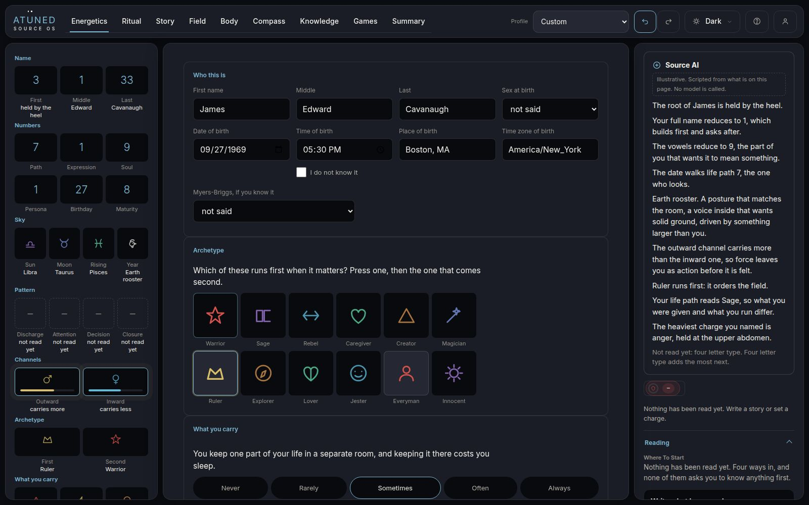</a><figcaption><b>James, finished.</b> 31 tiles, every one pressable.</figcaption></figure>
<figure><a href="shots/b-owner-card-oneill-1600.jpg">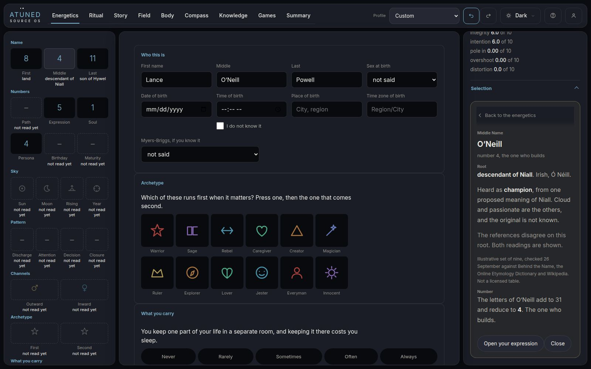</a><figcaption><b>His own three names.</b> O'Neill pressed: the reference root and the popular one side by side.</figcaption></figure>
<figure><a href="shots/b-blank-390.jpg">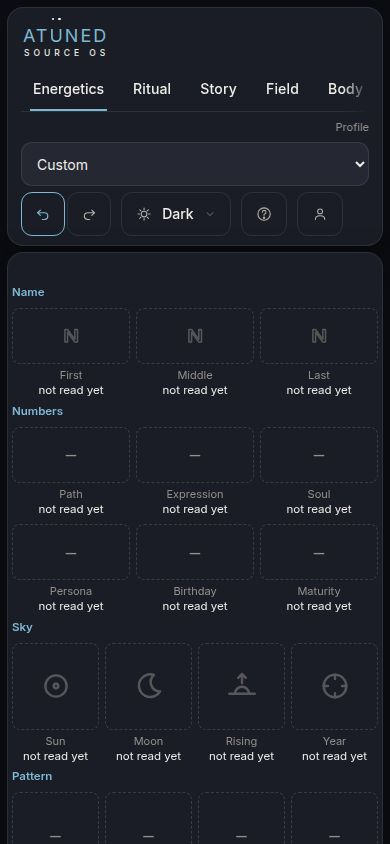</a><figcaption><b>Phone, blank.</b> The first field is 1,682 pixels down.</figcaption></figure>
</div>
</section>

<section class="v" id="c">
<div class="vh"><h2>Staged</h2><span class="vk">one question at a time. Each answer opens named tiles.</span></div>
<p>First name, then middle, last, date, time, place and zone, type, the archetype, then the nine questions one tap each. After each answer a "just opened" card shows what it bought. The rail holds only what is open: a group not reached yet is its name and the answer that opens it, with nothing to press. Every step has Skip, and "Show every question at once" drops to Quiet, so this is the strong default the house already ruled, never a hard gate.</p>
<div class="shots">
<figure><a href="shots/c-james-done-1600.jpg">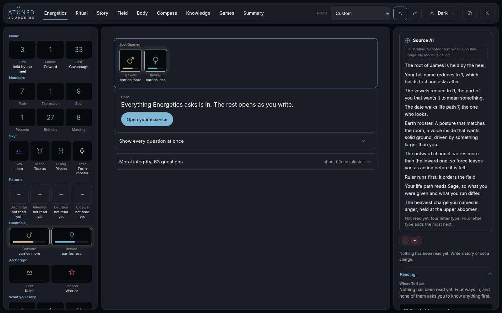</a><figcaption><b>James, finished.</b> The last step opened both channels.</figcaption></figure>
<figure><a href="shots/c-blank-1600.jpg">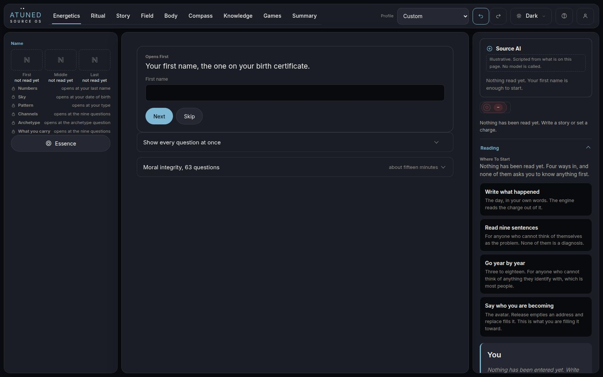</a><figcaption><b>A stranger's first screen.</b> Nine controls on the surface.</figcaption></figure>
<figure><a href="shots/c-james-first-390.jpg">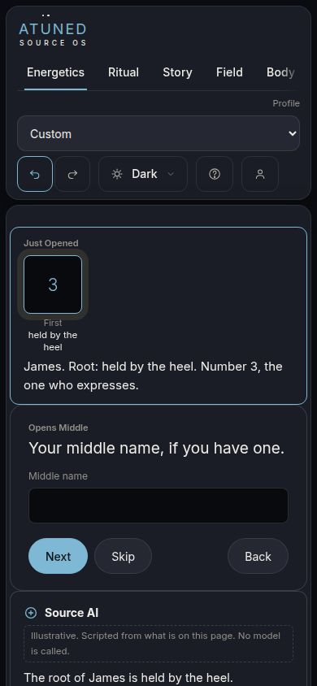</a><figcaption><b>Phone, first name given.</b> What it opened sits above the next question.</figcaption></figure>
</div>
</section>

<section class="v" id="d">
<div class="vh"><h2>Portrait</h2><span class="vk">the form moves to the rail. The centre is the essence page.</span></div>
<p>Fields and questions in the left rail. The centre is one page that grows as they fill: given, born, pattern, channels, drives, each line saying what it needs when it is not read yet. Source AI on the right.</p>
<div class="shots">
<figure><a href="shots/d-james-done-1600.jpg">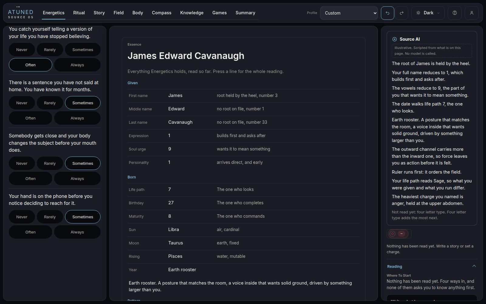</a><figcaption><b>James, finished.</b> The summary page he asked for, as the centre.</figcaption></figure>
<figure><a href="shots/d-angela-done-1600.jpg">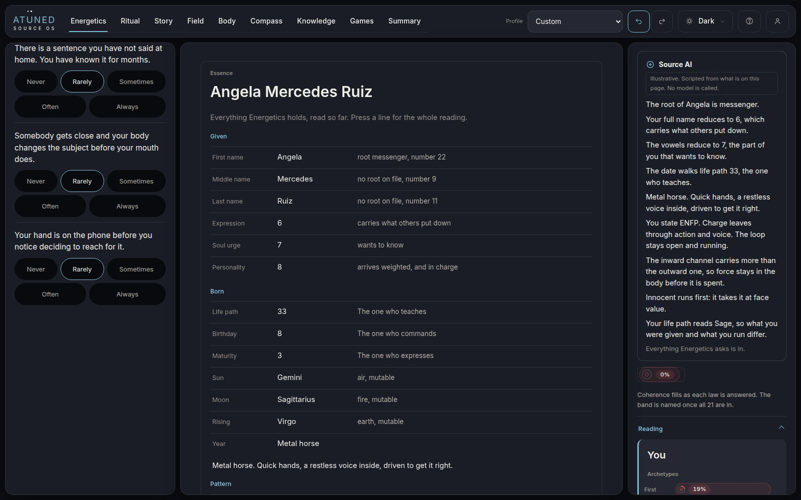</a><figcaption><b>Angela, finished.</b></figcaption></figure>
<figure><a href="shots/d-james-first-390.jpg">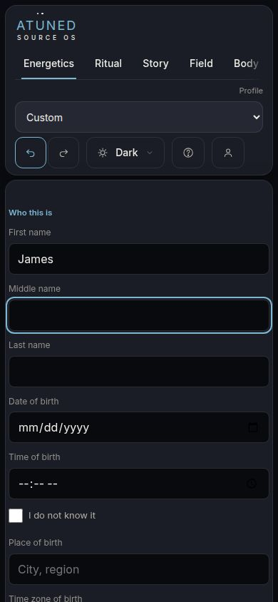</a><figcaption><b>Phone, first name typed.</b> Nothing on screen changed. The reading is 2,830 pixels down.</figcaption></figure>
</div>
</section>

<h2>What was measured</h2>
<p>Every figure is the mean over the six ICPs, off <code>shots/facts.json</code>. "Seen" means a reading changed inside the screen the person was looking at within half a second of the step. Source AI is counted apart, because it is scripted. The house target is under twelve simultaneous choices on a working screen; working memory holds about four.</p>
<div class="wrap"><table>
<tr><th></th><th>Quiet</th><th>Tiles</th><th>Staged</th><th>Portrait</th></tr>
<tr><td colspan="5"><b>At a desk, 1600 wide</b></td></tr>
<tr><td>Controls on a stranger's first screen, this surface</td><td class="num best">9</td><td class="num">51</td><td class="num best">9</td><td class="num">24</td></tr>
<tr><td>Controls on the whole surface, finished</td><td class="num">72</td><td class="num">99</td><td class="num best">36</td><td class="num">91</td></tr>
<tr><td>Steps whose reading was seen, not counting Source AI</td><td class="num">8 of 18</td><td class="num best">17 of 18</td><td class="num best">17 of 17</td><td class="num">9 of 18</td></tr>
<tr><td>Presses and fields to get everything in</td><td class="num">21</td><td class="num best">19</td><td class="num">26</td><td class="num best">19</td></tr>
<tr><td>Words on the finished surface</td><td class="num">552</td><td class="num">490</td><td class="num best">249</td><td class="num">620</td></tr>
<tr><td>Ten readings pressed, card opened</td><td class="num">9 of 10, the essence is a fold</td><td class="num best">10 of 10</td><td class="num best">10 of 10</td><td class="num">9 of 10, the essence is the centre</td></tr>
<tr><td colspan="5"><b>On a phone, 390 wide</b></td></tr>
<tr><td>Where the first field sits</td><td class="num">445 px</td><td class="num">1,682 px</td><td class="num best">408 px</td><td class="num best">341 px</td></tr>
<tr><td>Words before the first field</td><td class="num">29</td><td class="num">119</td><td class="num best">13</td><td class="num best">5</td></tr>
<tr><td>Steps whose reading was seen, not counting Source AI</td><td class="num best">7 of 18</td><td class="num">0 of 18</td><td class="num best">7 of 17</td><td class="num">0 of 18</td></tr>
<tr><td>Steps with Source AI on screen</td><td class="num">1 of 18</td><td class="num">8 of 18</td><td class="num best">16 of 17</td><td class="num">0 of 18</td></tr>
<tr><td>First name read, and on screen</td><td class="num best">6 of 6</td><td class="num">6 of 6, 142 px away</td><td class="num best">6 of 6</td><td class="num">0 of 6</td></tr>
<tr><td>Controls under 44 pixels</td><td class="num">1</td><td class="num">1</td><td class="num best">0</td><td class="num">1</td></tr>
</table></div>
<p class="rests">Floors held in all four at both widths: no sideways scroll at 390, no page error, no request leaving the file. The one control under 44 pixels in three layouts was the time unknown checkbox, whose label measured 36 pixels tall; it was raised to 44 after the run. The first card opened in a session at desk width landed below the rail's fold in all four layouts; every card after it opened in view. The walks for Quiet and Portrait were rerun after their channel strip was made pressable; the others are from the first run on the same build. On the phone, Staged shows 7 of 17 readings outside Source AI because the archetype and nine question answers read in Source AI and the rail, both under the question.</p>

<h2>The six, on all four</h2>
<p>Tags are the house set from <code>RESEARCH-icp.md</code>, and are judgement. Band is each person's own CQ band from the engine, placed on the buyer grid in <code>BUYERS.md</code>: Sofia at level 8, Marcus and Angela at 7, Diane at 6, Derek and James at 5. Every ICP met "no root on file" on two of their three names.</p>
<div class="wrap"><table class="grid6">
<tr><th>Person</th><th>Quiet</th><th>Tiles</th><th>Staged</th><th>Portrait</th></tr>
<tr><td><b>Sofia</b>, 41, somatic practitioner. Compounding, level 8.</td>
<td><span class="tag t-hold">HOLD</span><p class="voice">Calm. I read bodies for a living and I want the whole map at once, not a line under a box.</p><p class="rests">No rail. Readings seen 8 of 18 at a desk.</p></td>
<td><span class="tag t-buy">BUY</span><p class="voice">This is the instrument. Sky, numbers and what I carry in one place, and every one opens.</p><p class="rests">10 of 10 cards. Loses her on her phone between clients: first field 1,682 px down.</p></td>
<td><span class="tag t-hold">HOLD</span><p class="voice">It runs like an intake form I would give a client. For myself I would skip ahead.</p><p class="rests">26 presses. "Show every question" is one row down.</p></td>
<td><span class="tag t-hold">HOLD</span><p class="voice">That centre page is what I would hand a client. Filling it in felt blind.</p><p class="rests">Readings seen 9 of 18 at a desk: they land in the centre while she types in the rail.</p></td></tr>
<tr><td><b>Diane</b>, 46, founder. Even, level 6. Life path and expression both 22.</td>
<td><span class="tag t-hold">HOLD</span><p class="voice">Efficient. It told me what I typed meant and got out of the way.</p><p class="rests">21 actions.</p></td>
<td><span class="tag t-resist">RESIST</span><p class="voice">Fifty buttons before I have typed my name. I run a company for that.</p><p class="rests">51 controls on her first screen.</p></td>
<td><span class="tag t-buy">BUY</span><p class="voice">Every answer paid me back straight away. The 22 showed up at the date and then again at my name.</p><p class="rests">17 of 17 steps read and seen.</p></td>
<td><span class="tag t-hold">HOLD</span><p class="voice">I would read this page. I would not fill it in this way.</p><p class="rests">620 words finished.</p></td></tr>
<tr><td><b>Marcus</b>, 44, creative director. Gaining, level 7.</td>
<td><span class="tag t-hold">HOLD</span><p class="voice">Clean. Nothing to look at, though.</p><p class="rests">No drawn reading until the channels strip.</p></td>
<td><span class="tag t-confuse">CONFUSE</span><p class="voice">Thirty one dashed boxes all saying not read yet. It looks unfinished, and I cannot tell which one I am meant to fill.</p><p class="rests">Every tile starts dashed.</p></td>
<td><span class="tag t-buy">BUY</span><p class="voice">The reveal is the design. One thing at a time and the rail builds itself.</p><p class="rests">9 controls on the first screen. Locked groups show nothing to press.</p></td>
<td><span class="tag t-resist">RESIST</span><p class="voice">A whole form crammed into a column three hundred pixels wide.</p><p class="rests">The form lives in the 340 px rail.</p></td></tr>
<tr><td><b>Angela</b>, 36, seeker. Gaining, level 7. Life path 33.</td>
<td><span class="tag t-hold">HOLD</span><p class="voice">Messenger. I like that. I wanted more of it.</p><p class="rests">The root is one line of text.</p></td>
<td><span class="tag t-hold">HOLD</span><p class="voice">Beautiful. Where do I start?</p><p class="rests">51 controls first screen.</p></td>
<td><span class="tag t-buy">BUY</span><p class="voice">My name first, and it meant something. Then the stars. I would do this every time.</p><p class="rests">First name read and on screen, 6 of 6 walks.</p></td>
<td><span class="tag t-buy">BUY</span><p class="voice">I would screenshot this page.</p><p class="rests">At a desk only. On her phone nothing she typed showed, 0 of 18.</p></td></tr>
<tr><td><b>Derek</b>, 39, endurance. Oscillating, level 5.</td>
<td><span class="tag t-hold">HOLD</span><p class="voice">Fine. Where is the dashboard?</p><p class="rests">No rail.</p></td>
<td><span class="tag t-buy">BUY</span><p class="voice">Dashboard. Everything numbered and pressable.</p><p class="rests">19 actions, the fewest with Portrait.</p></td>
<td><span class="tag t-resist">RESIST</span><p class="voice">Next, next, next. Give me the form.</p><p class="rests">26 presses, 7 more than Tiles. "Show every question at once" answers it in one press, if he sees it.</p></td>
<td><span class="tag t-hold">HOLD</span><p class="voice">Good summary. Clumsy to fill.</p><p class="rests">Readings seen 9 of 18.</p></td></tr>
<tr><td><b>James</b>, 57, C-suite. Oscillating, level 5. Leaves the type blank.</td>
<td><span class="tag t-buy">BUY</span><p class="voice">Least nonsense. It asks, it tells me, it does not make me play.</p><p class="rests">9 controls first screen.</p></td>
<td><span class="tag t-resist">RESIST</span><p class="voice">Too much.</p><p class="rests">99 controls finished.</p></td>
<td><span class="tag t-resist">RESIST</span><p class="voice">Held by the heel. Supplanter. Is it calling me a usurper?</p><p class="rests">His own root, as the references give it. See question 5.</p></td>
<td><span class="tag t-hold">HOLD</span><p class="voice">I would read the page. I would not have filled it in this way.</p><p class="rests">Readings seen 9 of 18.</p></td></tr>
</table></div>

<h2>The verdict</h2>
<div class="finding">
<p><b>Staged performs best, and it is best as a first visit that grows into Tiles, not as a layout of its own.</b></p>
<p>It is the only layout that kept a stranger under the working screen target (9 controls), read and showed something at every step at both widths, opened every card, printed the fewest words (249) and put no control under 44 pixels. It won three BUYs across three levels of the grid (Diane at 6, Marcus and Angela at 7). Its cost is seven more presses than Tiles, and it lost Derek and James, who wanted the form. The escape row answers them, and should be more prominent than it is.</p>
<p><b>Tiles is the rail he described</b> and the strongest at a desk for the people already working (Sofia at 8, Derek), with every step seen. It fails a stranger: 51 controls on the first screen, 99 finished, and on a phone the first field sits 1,682 pixels down. Staged's rail at the end of its path is Tiles with the fog lifted, so the two are one design: Staged on day one, the full tile rail on every visit after.</p>
<p><b>Quiet</b> is the calmest and James's pick, and it drops the rail he wants lit. <b>Portrait</b> gives him the summary page as the centre, which three of six liked reading, and it fails the live part on a phone outright: nothing the person types shows on screen.</p>
<p><b>Next real step</b>, as every round: five people, twenty minutes each, on their own phones, on Staged into Tiles.</p>
</div>

<h2>Found in passing</h2>
<div class="finding"><p><b>O'Neill reads as two names in the shipped numerology.</b> <code>numClean</code> in <code>engine/numerology.js</code> turns the apostrophe into a space, so "Lance O'Neill Powell" becomes four names, one of them "O". The totals still agree (digit sums keep the value mod nine) but the per name rows are wrong, and a master number inside a name can be lost. The prototype drops the apostrophe before calling it. Not patched in the engine.</p></div>
<div class="finding"><p><b>The shipped "I do not know it" checkbox hides its own I.</b> The input's negative margin in <code>.iq-ck input</code> is 13 pixels against a 10 pixel gap, so the box sits over the first letter. Visible in the shipped screenshot above.</p></div>
<div class="finding"><p><b>Two opposite claims on one screen.</b> With a full name, date, sky and type read, the right rail under Source AI still says "Nothing has been read yet". The product counts read as a story or a measured law, and an identity read is neither. See question 11.</p></div>
<div class="finding"><p><b>A blank profile reads as balanced.</b> <code>loadProfile</code> fills any missing axis with 3, so a stranger's profile read through it shows both channels at 3 and a lean of even that nobody entered. <code>loadP(0)</code> sets 0 and does not have the defect; the prototype sets 0 itself.</p></div>

<h2>His own three names</h2>
<p>The references disagree with the meanings he gave, which is the reason a root and a popular reading are kept apart on every card.</p>
<div class="wrap"><table>
<tr><th>Name</th><th>He said</th><th>The references give</th><th>Where "his" meaning comes from</th></tr>
<tr><td><b>Lance</b></td><td>to pierce</td><td>land. Germanic, from Lanzo, a short form of names built on land.</td><td>A later link to Old French <i>lance</i>, a spear.</td></tr>
<tr><td><b>O'Neill</b></td><td>champion</td><td>descendant of Niall. Irish, Ó Néill.</td><td>One proposed meaning of Niall. Cloud and passionate are the others; the original is not known.</td></tr>
<tr><td><b>Powell</b></td><td>exalted</td><td>son of Hywel. Welsh, ap Hywel. Hywel is eminent, well seen.</td><td>A loose reading of eminent.</td></tr>
</table></div>

<h2>Questions for him, in full</h2>

<div class="q"><h3>1. Which layout does a new person meet?</h3>
<p>The panel's pick is Staged on the first visit, turning into the Tiles rail for every visit after.</p>
<ul><li><b>Staged, then Tiles.</b> Best on every stranger measure. Costs seven more presses on day one, and loses the two who want a form unless "Show every question at once" is made obvious.</li>
<li><b>Tiles from the start.</b> Closest to his words about the rail lighting up. Costs a first screen of 51 controls, and a phone version that has to be rebuilt, because the rail pushes the first field 1,682 pixels down.</li>
<li><b>Quiet.</b> The calmest. Costs the rail he asked to see lighting up.</li></ul></div>

<div class="q"><h3>2. Where do the name roots come from?</h3>
<p>No root meaning exists in the product today. The engine's own header says why: a root cannot be looked up on a device that makes no request, and inventing one is a claim the instrument does not make. Three ways to get one:</p>
<ul><li><b>License a reference.</b> Behind the Name is the one most apps draw on; its reuse terms have not been checked. Print references such as the Oxford Dictionary of First Names and the Dictionary of American Family Names cover more surnames and cost a license. Costs: a license, a table carried inside a file that is kept small on purpose, and coverage that stays thin for many surnames and for names outside European languages. In the roster, Nkem, Adaeze and Okonkwo would likely read "no root on file".</li>
<li><b>Fetch it at sign in,</b> through the one network seam the accounts product already has. Costs: the person's name leaves the device to be looked up.</li>
<li><b>Ask the person</b> what their family says it means, and show that as theirs. Costs: it is self report, and gets marked as such.</li></ul>
<p>Size, as an estimate and not a measurement: five thousand given names at about a hundred and twenty bytes each is roughly six hundred kilobytes, over half the size of the whole build. That is the thing he said he did not want: something that weighs more than the software.</p></div>

<div class="q"><h3>3. What does the product say when a name has no root on file?</h3>
<ul><li><b>"No root on file for Alarcon. The number still reads."</b> As built. True, and it will be what most people see for at least one name.</li>
<li><b>Hide the root slot</b> for that name. Cleaner. Costs a layout that changes shape by name, and hides that the table is thin.</li>
<li><b>Offer to take the family's meaning</b> (question 2, third way).</li></ul></div>

<div class="q"><h3>4. The reference root or the popular meaning?</h3>
<p>His own three show the problem: the root of Lance is land, and to pierce is what people hear in it.</p>
<ul><li><b>Both, labelled.</b> As built. Honest. Costs a second line on every name that has one.</li>
<li><b>The popular one only.</b> Warmer, and what people expect. Costs printing a claim the reference contradicts.</li>
<li><b>The root only.</b> Strict. Costs Lance reading "land", which is not what he wanted to see.</li></ul></div>

<div class="q"><h3>5. A root that reads badly</h3>
<p>James's root is "held by the heel", and the other traditional reading is supplanter. Cameron is usually given as crooked nose, Claudia as lame. The simulated James read his as an accusation.</p>
<ul><li><b>Print it as the reference gives it.</b> The voice rules forbid comfort in place of information. Costs some people on their first screen.</li>
<li><b>Print only the kinder of two readings</b> where two exist. Costs choosing for them.</li>
<li><b>Hold the root back until it is pressed.</b> The tile shows the number; the root is on the card. Costs the "starting point you embody" arriving one press later.</li></ul></div>

<div class="q"><h3>6. Myers Briggs, read four letters at a time</h3>
<p>As built, each letter reads through the engine's own definition of that pole (discharge, attention, decision, closure), and the card says which of the nine axes the type raised. It is marked as stated, never detected.</p>
<ul><li><b>Keep it at four readings.</b> Four arguable claims, which is what the seed file was built on.</li>
<li><b>Write sixteen type descriptions.</b> Closer to what 16Personalities trained people to expect. Costs sixteen fixed claims about people.</li></ul></div>

<div class="q"><h3>7. Which name leads on the channels: outward and inward, or masculine and feminine?</h3>
<p>His words were two channels of one vehicle, external force and internal force. As built the tile says Outward and Inward, and the card names them the masculine and feminine channels, with the codex line that neither means men or women.</p>
<ul><li><b>Outward and inward first.</b> Reads as mechanics. Costs matching the Field's strip, which says masculine and feminine.</li>
<li><b>Masculine and feminine first.</b> Matches the Field. Costs the reading of gender a stranger may bring to it.</li></ul></div>

<div class="q"><h3>8. Do the nine child emotion answers write into the Field?</h3>
<p>As built, each answer sets that emotion's held charge the way the web quiz scores it (Never is 0, Always is 10), so Field, Body and the channels move with them.</p>
<ul><li><b>Yes, as built.</b> The rail and the Field agree at once. Costs a stranger's first picture being nine self reports.</li>
<li><b>No, until a story confirms them.</b> Costs the channels staying unread for anyone who gives no type.</li></ul></div>

<div class="q"><h3>9. The archetype question</h3>
<p>As built it is the product's own pick: twelve archetypes, first and second. He named Jungian archetype questions, and the situational questions modelled on the Ultima virtue dilemmas are still pending their format ruling.</p>
<ul><li><b>Keep the pick.</b> One screen, two presses. Costs asking a person to name themselves, which is the ego's own account.</li>
<li><b>Replace it with situational questions.</b> Reads behaviour rather than self image. Costs a format ruling and the writing of them.</li></ul></div>

<div class="q"><h3>10. Source AI, before a model exists</h3>
<p>The panel is scripted today: sentences assembled from the readings, labelled as such.</p>
<ul><li><b>Ship the scripted version as a summary</b>, without the AI name. Deterministic and true today. Costs the name he chose.</li>
<li><b>Wait for a real model.</b> Costs the network, a controller of the data, and a decision on what it may read: the name, the birth details, the stories.</li></ul></div>

<div class="q"><h3>11. Does an identity read count as read?</h3>
<p>Beside a full name, sky and type, the right rail says "Nothing has been read yet", because read means a story or a measured law.</p>
<ul><li><b>Count identity as read</b> for the rail's opening lines. Costs loosening the guard that stops Summary and Field printing a band off nothing.</li>
<li><b>Keep the guard, change the words</b> to say what is missing: "No story yet." Costs a second wording for an empty state, which the house keeps to one.</li></ul></div>
</main>
